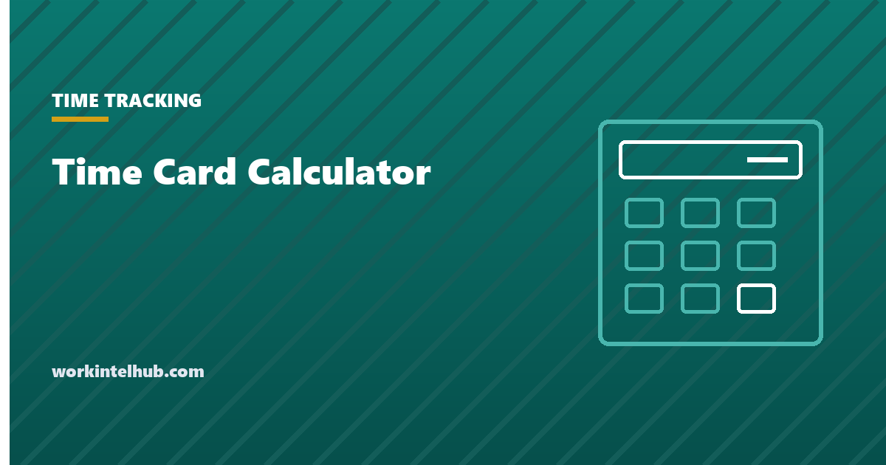

Time Card Calculator

Enter each day's in and out times and any unpaid break. The calculator totals the week in decimal hours and hours-and-minutes, applies the rounding rule you choose to each punch the way a time clock would, and splits regular from overtime hours under either the federal weekly rule or a daily-plus-weekly rule.
Most time card calculators stop there. This page also covers what the rounding and break settings are actually allowed to do, because those two settings are where most wage claims about time cards come from.
Weekly time card calculator
| Day | In | Out | Break (min) | Hours |
|---|---|---|---|---|
| Mon | 0.00 | |||
| Tue | 0.00 | |||
| Wed | 0.00 | |||
| Thu | 0.00 | |||
| Fri | 0.00 | |||
| Sat | 0.00 | |||
| Sun | 0.00 |
Overnight shifts are handled: an out time earlier than the in time is treated as the next day. Rounding is applied to each punch, which is how time clocks do it; the totals show both rounded and exact hours so you can see the difference. Nothing you type leaves your browser.
How the calculator counts
- Minutes between in and out. An out time earlier than the in time is read as the following day, so a 22:00 to 06:00 night shift gives eight hours, not minus sixteen.
- Rounding, if selected, is applied to each punch, not to the daily total. That is how clock systems work, and it matters: rounding a 08:53 punch to 09:00 and a 17:07 punch to 17:00 removes fourteen minutes from that day, which is why the exact total is shown alongside.
- Unpaid break minutes are subtracted from the day. Only enter a break here if the employee was completely relieved of duty for it; the section below explains why.
- Overtime. The federal rule counts hours over 40 in the workweek. The daily option counts hours over 8 in a day as well and takes whichever total is larger, which is the shape of California's rule (it also has double time after 12, which this calculator does not model).
What rounding is allowed to do
Rounding is lawful under federal law, within limits. 29 CFR 785.48 accepts recording time "to the nearest 5 minutes, or to the nearest one-tenth or quarter of an hour", on the presumption that "this arrangement averages out so that the employees are fully compensated for all the time they actually work". The condition is that the practice does not "result, over a period of time, in failure to compensate the employees properly for all the time they have actually worked".
Two things follow. Rounding must be neutral: always rounding down, or rounding in whichever direction favours the employer, fails the test. And the largest permitted unit is a quarter hour, which is where the "7-minute rule" comes from: under quarter-hour rounding, a punch up to seven minutes past the quarter rounds down and eight or more rounds up.
With electronic clocks recording exact minutes, several courts and state agencies have questioned whether rounding still serves any purpose. The safest configuration in 2026 is no rounding at all, which is the calculator's default. If you round, use the exact total row to check that the difference is not consistently in one direction.
Which breaks can be deducted
The break column is the second place time cards go wrong. Federal law draws the line by length and by whether the employee is actually free.
- Short rest breaks are paid. 29 CFR 785.18: rest periods "running from 5 minutes to about 20 minutes" are "customarily paid for as working time" and "must be counted as hours worked". Do not deduct them.
- Meal periods can be unpaid only if the employee is completely relieved. 29 CFR 785.19: "ordinarily 30 minutes or more is long enough for a bona fide meal period", but "the employee must be completely relieved from duty". The regulation's own example is that "an office employee who is required to eat at his desk or a factory worker who is required to be at his machine is working while eating".
- Automatic deductions are the risk. A system that removes 30 minutes a day whether or not the meal was taken produces exactly the underpayment the calculator's exact row is there to expose. If the employee worked through lunch, the break entry should be zero.
Several states add their own meal and rest requirements with penalties for missed breaks, California most prominently. The calculator deducts what you enter; it does not tell you whether the deduction was lawful.
What the record has to contain
A printed time card from this page is not, on its own, a compliant payroll record. 29 CFR 516.2 requires the employer to keep, for each non-exempt employee, the time and day the workweek begins, hours worked each day and each week, the basis of pay, regular rate, straight-time and overtime earnings, deductions, and dates of payment. Our timesheet template is built around those fields, and the conversion chart covers every minute to decimal value if you are totalling by hand.
For pay rather than hours, the overtime calculator works out the regular rate including bonuses and shift differentials, which this page's simple rate-times-hours line does not.
Key takeaways
- Rounding is applied per punch, not per day, so a neutral-looking rule can still remove minutes. Check the exact row.
- Federal law accepts rounding to 5, 6 or 15 minutes only if it averages out over time. Rounding that consistently favours the employer is unlawful.
- Rest breaks of 5 to 20 minutes are paid time and must not be deducted.
- A meal break can be unpaid only if it is about 30 minutes or more and the employee is completely relieved of duty. Eating at the desk is work.
- Automatic meal deductions applied regardless of whether the break was taken are the most common time card underpayment.
- Federal overtime is weekly over 40. Some states add daily overtime, which the calculator's second rule models.
- The printed card is not a payroll record on its own; 29 CFR 516.2 lists what has to be kept.
Frequently asked questions
How do I calculate time card hours?
Convert each in and out time to minutes, subtract the in time from the out time, subtract any unpaid meal break, and divide by 60 to get decimal hours. Add the days together for the week. The calculator above does this and also applies rounding and overtime rules.
What is the 7-minute rule for time cards?
Under quarter-hour rounding, a punch up to seven minutes after the quarter rounds down to it and a punch eight or more minutes after rounds up to the next quarter. It comes from 29 CFR 785.48, which allows rounding to the nearest quarter hour provided it does not, over time, underpay employees.
Is time card rounding legal?
Under federal law, yes, to the nearest 5 minutes, tenth of an hour or quarter hour, as long as the practice averages out and does not systematically shortchange employees. Rounding that always favours the employer is not permitted, and some states have moved against rounding where exact times are recorded.
Should lunch breaks be deducted from hours worked?
Only if the break is a bona fide meal period: ordinarily 30 minutes or more and with the employee completely relieved of duty. An employee who eats at their desk while answering the phone is working. Rest breaks of 5 to 20 minutes are always paid.
How does the calculator handle overnight shifts?
If the out time is earlier than the in time, it treats the out time as the next day. A 22:00 to 06:00 shift is counted as eight hours.
Does this calculator handle daily overtime?
The second overtime option counts hours over 8 in a day as well as hours over 40 in the week and uses the larger figure, which is the basic shape of California's rule. It does not model double time or seventh-day rules, so check your state's specifics.
Is a printed time card enough for payroll records?
No. 29 CFR 516.2 requires the employer to keep the workweek start, daily and weekly hours, pay basis, regular rate, straight-time and overtime earnings, deductions and payment dates, for at least three years. Use the card as an input to that record, not as the record.